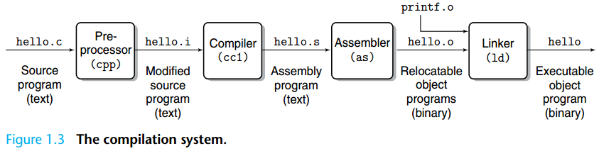

C 语言基础及Makefile¶
C 语言基础
如果你没有学习过 C 语言，我们 非常建议 你提前观看于老师的 C/C++ 课程 https://www.bilibili.com/video/BV1Vf4y1P7pq ，观看到第 6.5 章节有助于你了解基本的 C 语言语法。
RISC-V 汇编
我们期望你已经完成了《计算机组成原理》课程，并了解 RISC-V 汇编的基础知识。
此外，请常备 《The RISC-V Instruction Set Manual, Volume I: User-Level ISA, Version 2.1》(riscv-spec-v2.1.pdf) 与 《The RISC-V Instruction Set Manual, Volume II: Privileged Architecture, Document Version 20211203》(riscv-privileged-20211203.pdf) 作为参考 RISC-V 汇编的参考手册。
类型¶
在 C 语言中，整数类型有 long, int, short, char 等。 在绝大多数情况下，int 类型为 32 位长，而 long 类型的长度取决于 ABI（Application Binary Interface，在编译时由用户指定）。 为了避免编译目标架构的不同而导致 long、int 等类型实际长度与我们预想的不一致，在系统编程中，我们会使用定长的整形，如 uint64_t, int32_t 等。 在不同的ABI/编译器环境下，使用这一些类型保证了它们绝对是指定长度的。
例如，在 os/types.h 中：
typedef unsigned int uint;
typedef unsigned short ushort;
typedef unsigned char uchar;
typedef unsigned char uint8;
typedef unsigned short uint16;
typedef unsigned int uint32;
typedef unsigned long uint64;
我们定义了 uint64, uint32 等类型分别为 unsigned long 和 unsigned int。
由于我们面向 riscv64 架构进行编程，我们可以确保在我们的 XV6 中，它们是 64 / 32 位的。
unsigned
注意在C语言中值在int类型取值范围内的整数字面量的默认类型是int。
当unsigned int与有符号整数（如int）比较时，有符号整数会被提升为unsigned int。如果常数为负数，提升后可能变成一个非常大的无符号值，导致比较结果与预期不符。
可以尝试执行以下代码，观察结果：
指针¶
指针是编程语言中一种变量类型，它存储了另一个变量的内存地址。通过指针，可以间接访问和操作其他变量的值。指针通常用于动态内存分配、函数参数传递、数据结构（如链表、树等）的实现等场景。
-
指针的"内容"：它存储的是内存地址，而不是直接存储数据值。例如，指针 p 可以存储一个变量 x 的内存地址，而不是 x 的值。
-
指针的类型：指针有一个类型，表示它指向的是哪种类型的变量。例如，
int* p表示 p 是一个指向 int 类型的指针。 -
解引用：通过指针访问其指向的变量的过程叫做解引用，在 C 中，可以通过 * 操作符来解引用一个指针，获取指针所指向的值。
-
取地址：所有保存在内存上的变量可以被取地址，我们使用
&来表示取一个变量的地址。
例如：
int a = 10; // 定义一个变量 a，初始化为 10。
int *p = &a; // 取变量 a 的内存地址，放入指针 p 中
*p = 20; // 将 p 指向的内存地址修改为 20
int b = 30;
int **pp = &p; // 取变量 p 的地址，放入指针 pp 中
*pp = &b; // 将指针 p 的内容(其指向的地址)，改为变量 b 的地址。
**pp = 50; // 两次解引用。
printf("a: %d, b:%d\n", a, b); // 输出: a:20, b:50.
一张图理解指针：
结构体¶
我们使用 struct 关键字表明该类型是一个结构体。 结构体是一堆打包在一起的数据。
例如，我们声明结构体 struct proc，它的字段如下：
我们使用 . 操作符访问一个结构体变量的字段，使用 -> 操作符解引用一个结构体指针的字段。
编译系统¶
在计算机组成原理课程中，我们简要的介绍了 C 语言的编译系统。通常来说，编译一个程序分为以下几步：

- 源代码 .c 文件经过 Pre-processor 预处理 cpp 得到 .i 文件
.i 文件是 GCC 预处理阶段生成的中间文件，包含了展开的头文件、宏定义和条件编译后的代码。使用 gcc -E 可以生成 .i 文件。
- .i 文件通过编译器 cc1 编译器得到汇编文件 .s
编译器对.i文件进行语法检查，检查无误后将.i文件转换成机器可以理解的汇编代码（人类可阅读形式的机器代码），在此过程中优化器可以对代码进行优化。
- .s 文件通过汇编器 as 得到 Relocatable objects (可重定位文件) .o
在此过程中，汇编器将汇编代码转换为目标代码（机器代码-直接在机器上执行的代码，人类不可读）。
- 链接器 ld 链接所有 .o 文件得到最终的可执行文件
在 Linux 系统上，目标文件及可执行文件通常以 ELF (Executable and Linkable Format) 文件格式存储。 ELF 文件分为不同的段 Section，用于存储特定类型的数据，如代码（.text）、数据（.data）和符号表（.symtab），每个段都有其专门的用途和属性。
通常来说，我们会用"编译器"来指代整个编译与链接过程中用到的所有工具，尽管编译器和链接器是两个不同的程序。特别的，当我们讨论编译器和链接器时，我们会将进行 预处理、汇编、编译 等步骤的工具集合统称为编译器；将最后的链接步骤所用的工具称为链接器。
实验步骤1：观察C语言编译过程
下面是一个简单的C语言代码示例，适合用于观察GCC编译过程中的 .i、.s、.o 文件：
// main.c
#include <stdio.h>
int main() {
int a = 10;
int b = 20;
int sum = a + b;
printf("Sum: %d\n", sum);
return 0;
}
观察编译过程¶
-
预处理（Preprocessing）：生成
这会生成.i文件main.i文件，其中包含了预处理后的代码（宏展开、头文件包含等），可以通过cat main.i查看其内容。 -
编译（Compilation）：生成
这会生成.s文件main.s文件，其中包含了汇编代码，可以通过cat main.s查看其内容 -
汇编（Assembly）：生成
这会生成.o文件main.o文件，其中包含了目标代码（机器代码），可以通过objdump工具来分析main.o的内容。例如使用objdump -d hello.o可以查看机器码及其对应的汇编指令。 -
链接（Linking）：生成可执行文件
这会生成可执行文件main，可以通过file main来查看main的文件类型为ELF。可以通过GNU Binutils工具集中的readelf工具，你可以查看 ELF 文件的文件头、段信息、符号表、动态段信息等。例如使用readelf -h main可以查看main的文件头。
Definition 和 Declaration¶
Definition （定义） 和 Declaration （声明） 是 C 语言中非常容易混淆的两个概念。
Declaration 声明了一个符号（变量、函数等），和它的的一些基础信息（如变量类型、函数参数类型、函数返回类型等）。这使得编译器 在编译阶段 能使用这些类型信息进行代码生成 (Code Generation)。
而 Definition 实际上会为该符号分配内存地址。链接器会 在链接阶段 为这些符号 分配地址（如函数地址、全局变量地址）。
Symbol （符号）
在 C 语言中，符号（Symbol）是编译器用来表示程序中各种实体（如变量、函数、宏、类型名等）的名称。每个符号在编译过程中被关联到特定的内存地址或其他资源。当程序被编译时，编译器会为这些符号创建符号表 (Symbol Table)，记录它们的名称、类型、作用域以及对应的内存地址或值。
简而言之，符号是程序中代表实体的名字，编译器通过符号表来管理和解析这些名字。
编译器在编译某个 .c 文件时，它会一行一行的处理源代码，并维护一个符号表，表示当前文件中，到 目前为止 所有见过的符号。当编译器遇到对一个符号的引用（变量引用、函数调用）时，它会查找这个符号表；当编译器遇到一个符号的声明或定义时，它会向符号表中保存这个符号的信息。
所以，我们要保证，在引用一个符号时，它起码被声明过，即被编译器看到过。同时，在同一个文件中，定义也是一种声明。
对于编译器而言，如果该 .c 文件需要引用其它 .c 文件中的函数或者变量，则需要提前 声明 它。当编译器遇到了声明 (Declaration) 过但是没有在当前文件中被定义 (Definition) 过的符号时 (如 printf)，编译器会假定该符号会在其他 object 文件中被定义，留下一些信息后交给链接器在链接阶段寻找这个符号。
例如，a.c 定义 了变量 int a。如果 main.c 想要引用它，则需要使用 extern int a 来 声明 它。
编译时，我们先分别编译 a.c 和 main.c 到 a.o 和 main.o：gcc -c a.c -o a.o、gcc -c main.c -o a.o，然后链接两个 .o 文件：gcc main.o a.o 生成可执行文件 a.out。
编译 a.c 时，编译器生成的 a.o 会表示它有一个全局可见的符号，叫 a。
编译 main.c 时，编译器是不知道任何关于其他 .c 文件的信息的。但是我们在第一行声明了变量 a，所以它知道最终链接的时候会有一个符号叫 a。编译器产生的 main.o 中会表示它需要一个符号，叫 a。
链接器会查找所有 .o 文件的符号表，并根据名字和可见性匹配符号。
为了组织大型项目，我们不会在每个 .c 文件中手动导入其它 .c 文件中的符号，而是会使用头文件来声明这些会在 .c 中共享的符号。
头文件¶
头文件（Header File）的作用是声明函数、变量、宏定义、常量、类型等信息， 以便在多个源文件中共享。我们会在 .c 的开头使用 #include 宏导入头文件，它的语义是将文件内容直接复制到当前文件中，这一步是由 preprocessor 完成的。
如果某个 .c 文件中有些类型、函数、变量需要被其他 .c 文件引用，我们会创建一个对应的头文件。在给头文件取名上，我们一般使用同样的文件名，但是使用 .h 后缀；例如，对于 a.c 里面需要共享的信息，我们会创建一个它的头文件 a.h。
对于需要共享的函数、变量，我们通常会在 a.h 中 声明，在 a.c 中 定义：
// a.h
extern int a;
int add(int x, int y);
// a.c
int a;
// or int a = 10;
int add (int x, int y) {
return x + y;
}
假如 main.c 需要引用 a.c 中提供的 a 变量或者 add 函数，则可以在其开头引入 a.h 头文件：
Note
-
在一个
.c文件中声明且定义的全局变量其他.c文件是无法 直接 使用的。例如你在一个.c文件中int a;，则在另一个文件中需要extern int a;，那么两个文件才是共享同一个a。 -
在多个
.c文件中定义全局变量时，我们要确保变量名是唯一的。否则会导致多重定义。 -
如果我们希望定义一些仅当前
.c可见的全局变量，我们可以使用static关键字。 -
.h文件中仅能声明变量，如果.h定义了一个变量并且存在两个以上的.c文件#include了这个.h文件，则也会出现多重定义，因为预处理器会将被 include 的内容直接复制到当前文件中，这最终会导致两个.c都会对这个变量进行定义。 -
如果你希望一个变量由多个
.c共享使用，可以在.h文件中声明这个变量并且使用extern关键字进行修饰，并在任何一个.c中定义它。
readelf 读取 Symbol Table¶
我们再次解释一下 Declaration 和 Definition 的区别：
-
Definition 是向链接器表示，这个 .o 文件里面有一个符号，链接器需要为它分配内存地址。如果其他 .o 需要引用这个符号，则要判断这个符号是否允许被外部访问，即声明时是否使用了 static。
-
Declaration 是向编译器保证，这个符号会在链接时被找到，不论是当前
.c或其他.c文件中定义的。编译器只要根据声明的变量类型或函数原型进行代码生成（如变量访存时的宽度 (lb, lw, ld)，函数的参数个数），链接器会负责去找到这些符号。
我们可以通过 llvm-readelf-19 --symbol <file> 查看一个 ELF 文件的符号表，里面字段的意义可以参照 https://docs.oracle.com/cd/E19455-01/816-0559/chapter6-79797/index.html
$ llvm-readelf-19 --symbols build/os/proc.o | grep -E "FUNC|OBJECT|GLOBAL"
Symbol table '.symtab' contains 1240 entries:
Num: Value Size Type Bind Vis Ndx Name
5: 0000000000000000 72 FUNC LOCAL DEFAULT 1 curr_proc
23: 0000000000000048 304 FUNC LOCAL DEFAULT 1 freeproc
97: 0000000000000178 92 FUNC LOCAL DEFAULT 1 first_sched_ret
128: 0000000000000000 4 OBJECT LOCAL DEFAULT 6 proc_inited.1
237: 0000000000000000 4 OBJECT LOCAL DEFAULT 7 PID.0
663: 0000000000000000 32 OBJECT LOCAL DEFAULT 4 pid_lock
664: 0000000000000020 32 OBJECT LOCAL DEFAULT 4 wait_lock
665: 0000000000000040 104 OBJECT LOCAL DEFAULT 4 proc_allocator
1201: 0000000000000000 0 NOTYPE GLOBAL DEFAULT UND push_off
1202: 0000000000000000 0 NOTYPE GLOBAL DEFAULT UND mycpu
1203: 0000000000000000 0 NOTYPE GLOBAL DEFAULT UND pop_off
1210: 0000000000000000 0 NOTYPE GLOBAL DEFAULT UND usertrapret
1211: 00000000000001d4 544 FUNC GLOBAL DEFAULT 1 proc_init
1212: 0000000000000000 0 NOTYPE GLOBAL DEFAULT UND spinlock_init
1213: 0000000000000000 0 NOTYPE GLOBAL DEFAULT UND allocator_init
1214: 00000000000000a8 4096 OBJECT GLOBAL DEFAULT 4 pool
1215: 0000000000000000 0 NOTYPE GLOBAL DEFAULT UND kernel_pagetable
1216: 0000000000000000 0 NOTYPE GLOBAL DEFAULT UND kallocpage
1217: 0000000000000000 0 NOTYPE GLOBAL DEFAULT UND kalloc
1218: 0000000000000000 0 NOTYPE GLOBAL DEFAULT UND memset
1219: 0000000000000000 0 NOTYPE GLOBAL DEFAULT UND kvmmap
Type 列表示该符号是函数 (FUNC) 还是变量 (OBJECT), Bind 表示这个符号是否允许其他 .o 找到 (LOCAL/GLOBAL)。Ndx 表示这个符号是否定义在这个 .o 里面，UND 表示它是外部的 .o，即需要从其他 .o 导入的符号，所以它的 Type 和 Size 都是未知的。
现在，你是否理解了链接中常出现的两种错误：multiple definition 和 undefined reference 的原因？
riscv64-unknown-elf-ld: build/os/proc.o:os/proc.c:14: multiple definition of 'idle'; build/os/main.o:os/main.c:7: first defined here- 在不同的 .c 文件中定义了多次
idle变量。
- 在不同的 .c 文件中定义了多次
riscv64-unknown-elf-ld: build/os/proc.o: in function 'proc_init': os/proc.c:38:(.text+0xd0): undefined reference to 'idle'- 在头文件中声明了
idle变量，但是没有定义它。
- 在头文件中声明了
Make 和 Makefile介绍¶
考虑一下，如果我们的工程稍微大一点（比如包含多个C语言文件），每次运行一次我们都要执行很多次gcc命令，是否有一种编译工具可以简化这个过程呢？接下来我们介绍自动化编译工具make。
Makefile 是一个用于自动化构建（编译、链接等）程序的配置文件，通常用于管理包含多个源文件的项目。它定义了如何从源代码生成目标文件（如可执行文件、库文件等），并确保只重新编译那些需要更新的部分，从而提高构建效率。
Makefile 是 make 工具的输入文件，make 是一个经典的构建工具，广泛用于 Unix/Linux 系统。
实验步骤2：使用makefile进行自动化构建
首先我们创建三个文件
//print.h 头文件
#include <stdio.h>
void print(void);
//print.c
#include "print.h"
void print(){
printf("Hello, World!\n");
}
//main.c
#include "print.h"
int main(){
print();
return 0;
}
因为文件中的依赖关系，如果我们想要运行上面的代码，我们需要为每个.c文件生成.o目标文件，然后把两个.o文件生成可执行文件：
由此可见，如果我们的文件数量很多，每次运行就会变得十分的复杂。为了使整个编译过程更加容易，可以使用Makefile。
接着，我们创建一个文本文件并命名为Makefile。
Makefile文件内容：
main : main.o print.o
gcc -o main main.o print.o
main.o : main.c print.h
gcc -c main.c
print.o : print.c print.h
gcc -c print.c
clean:
rm main main.o print.o
Warning
Makefile中的缩进只能是tab，不能是若干空格，否则无法执行。
最后，我们只需要执行一句make命令，就可以完成整个编译过程：
Makefile的基本结构¶
Makefile工作原理¶
在默认的方式下，也就是我们只输入 make 命令。那么，
- make会在当前目录下找名字叫“Makefile”或“makefile”的文件。
- 如果找到，它会找文件中的第一个目标文件（target），在上面的例子中，他会找到“main”这个文件，并把这个文件作为最终的目标文件。
- 如果main文件不存在，或是main所依赖的后面的
.o文件的文件修改时间要比main这个文件新，那么，他就会执行后面所定义的命令来生成main这个文件。 - 如果
main所依赖的.o文件也不存在，那么make会在当前文件中找目标为.o文件的依赖性，如果找到则再根据那一个规则生成.o文件。（这有点像一个堆栈的过程） - 当然，你的C文件和H文件是存在的啦，于是make会生成
.o文件，然后再用.o文件生成make的终极任务，也就是执行文件main了。
make clean¶
通过上述分析，我们知道，像clean这种，没有被第一个目标文件直接或间接关联，那么它后面所定义的命令将不会被自动执行，不过，我们可以显式要make执行。即命令—— make clean ，以此来清除所有的目标文件，以便重新编译。
参考及更多关于Makefile的知识请查看：（跟我一起写Makefile 1.0 文档 ）